Sera, Hiroshima: things to do, food and stays
Sera · Hiroshima
Sera
Highlighted on the Hiroshima map.
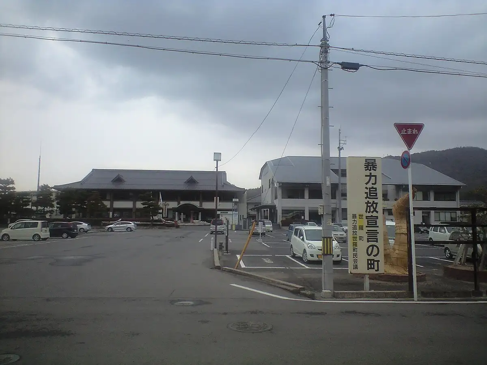
Stay
フェアフィールド･バイ･マリオット･広島世羅
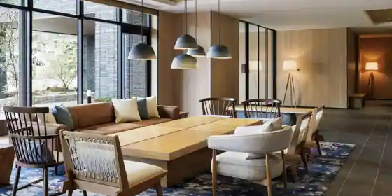
Feafirudo Feafirudo Bai Bai Mariotto Mariotto Hiroshima Sera
フェアフィールド・バイ・マリオット・広島世羅
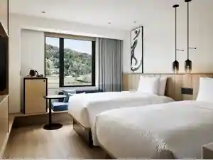
Feafirudo Bai Mariotto Hiroshima Sera
Dining
日向草
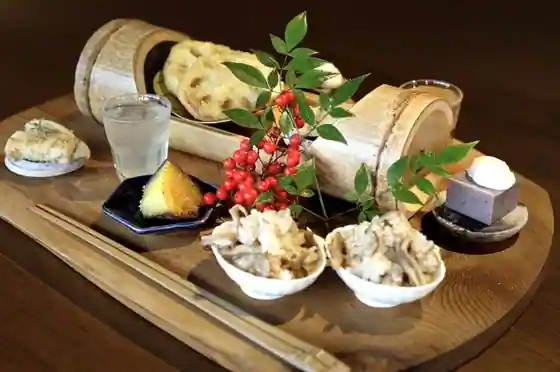
Hyuga Kusa
世羅のとうふ家 世羅本店
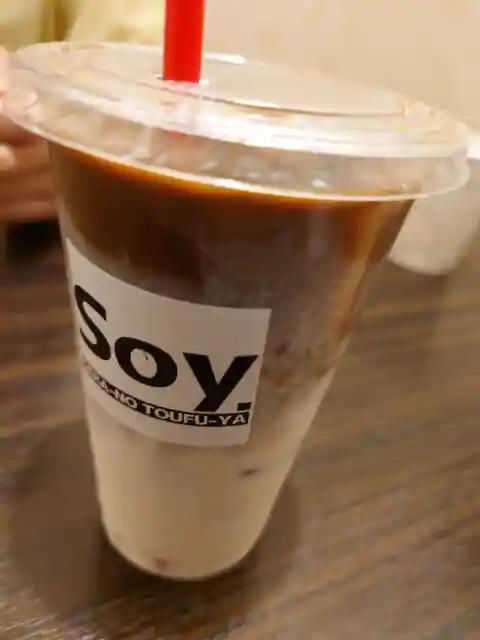
Sera Notofu Ie Sera Hon
おへそカフェ アンド ベーカリー
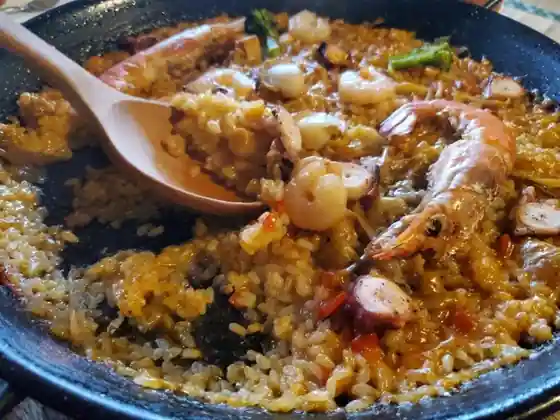
Oheso Cafe Ando Bakery
雪月風花 福智院
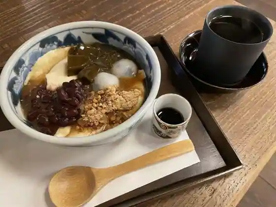
Yuki Gatsu Kazabana Fukuchi Inn
世羅つづみ鶏
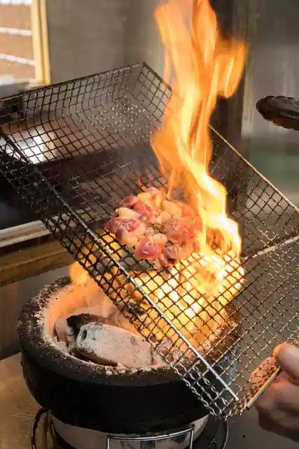
Sera Tsuzumi Niwatori
中華の店 楊々
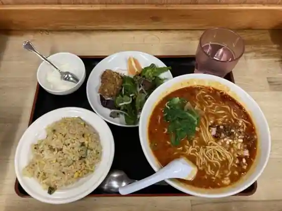
Chuka No Yo (Kurikaesi)
仲田屋
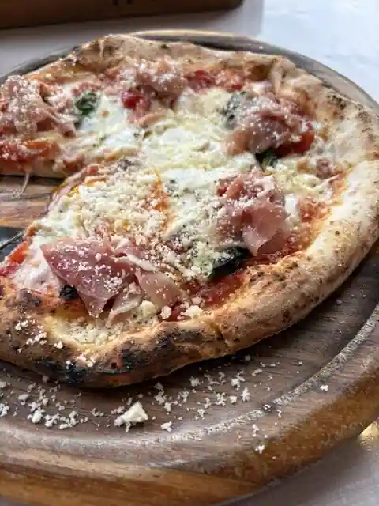
Nakada Ya
ジェラート工房 ドナ
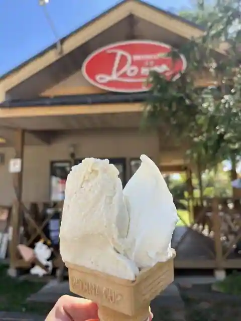
Jierato Kobo Dona
大手門
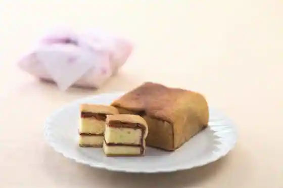
Ote Mon
ピッグボーン
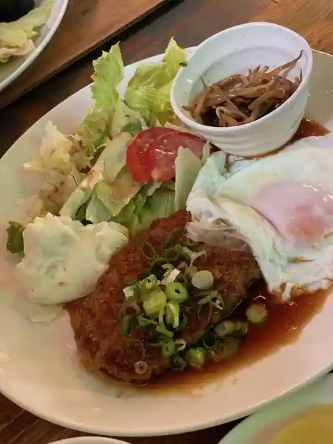
Piggubon
お好み焼き・鉄板料理 わらや
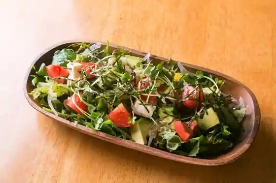
O Konomi Yaki Teppan Ryori Waraya
久恵風穴の里 ごもくめし
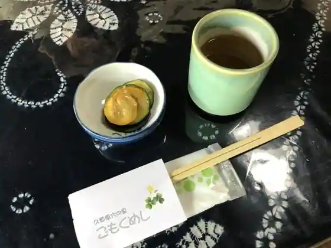
Hisae Kazana No Sato Gomokumeshi
玉乃家
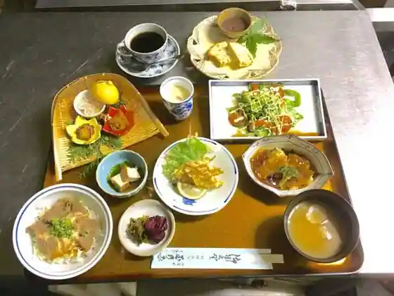
Tamano Ie
大阪たこ焼き こなもん 本店
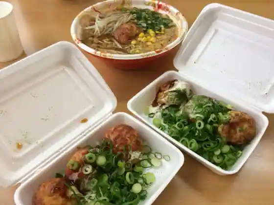
Osaka Tako Yaki Konamon Hon
おへそ パンショップ
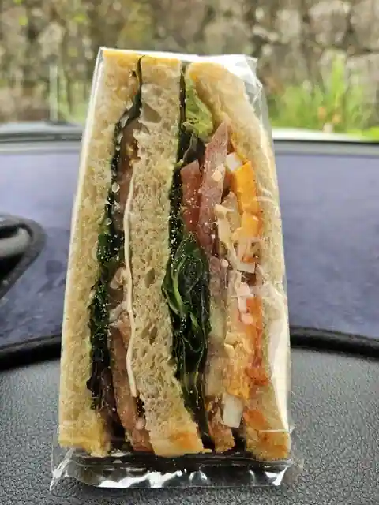
Oheso Bakery Shoppu
そば処 咲良
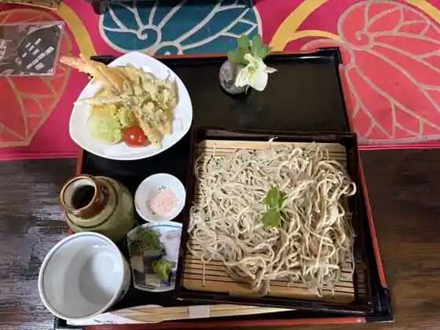
Soba Tokoro Sakura
ファミリーレストラン タイニー
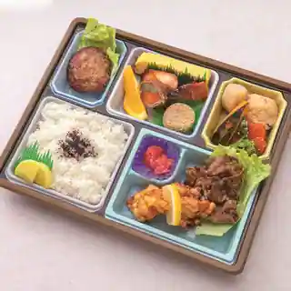
Famiri Restaurant Taini
小川うどん
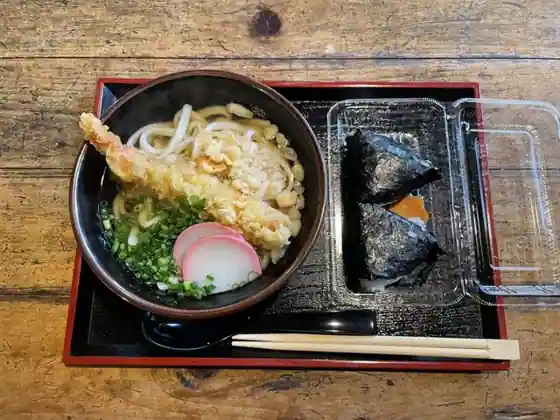
Ogawa Udon
せらワイナリーレストラン
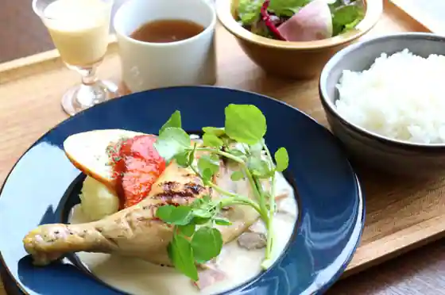
Sera Wainari Restaurant
台湾料理 鴻起順
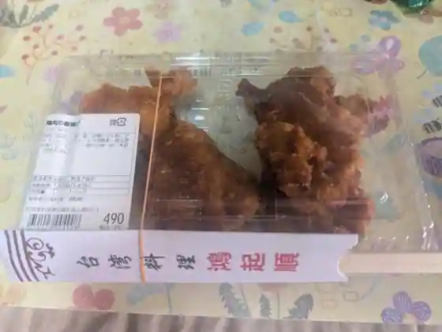
Taiwan Ryori Ko Ki Jun
ビストロ ラヴニール
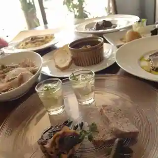
Bistro Ravuniru
Sights
Sera Wainarii
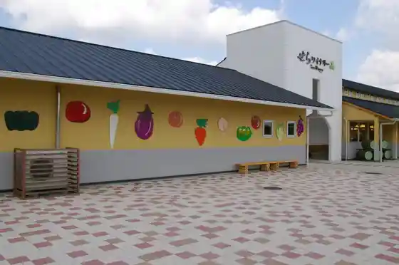
Sera Highlands Nojo
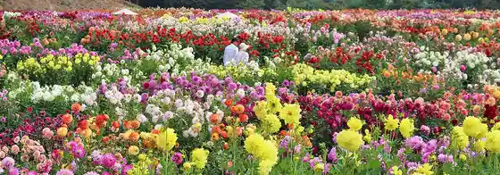
Roadside Station Sera
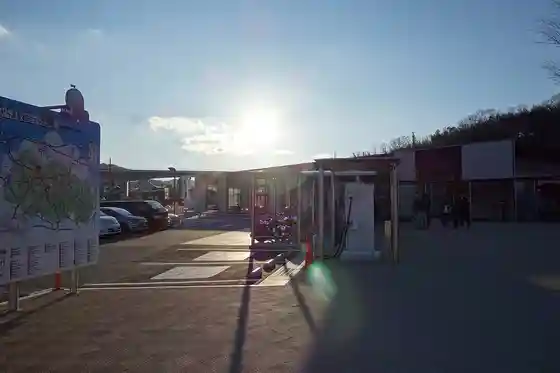
Hanayume Village
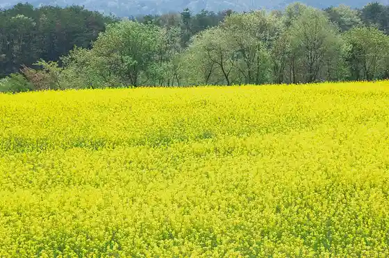
Kojo Yama Lookout